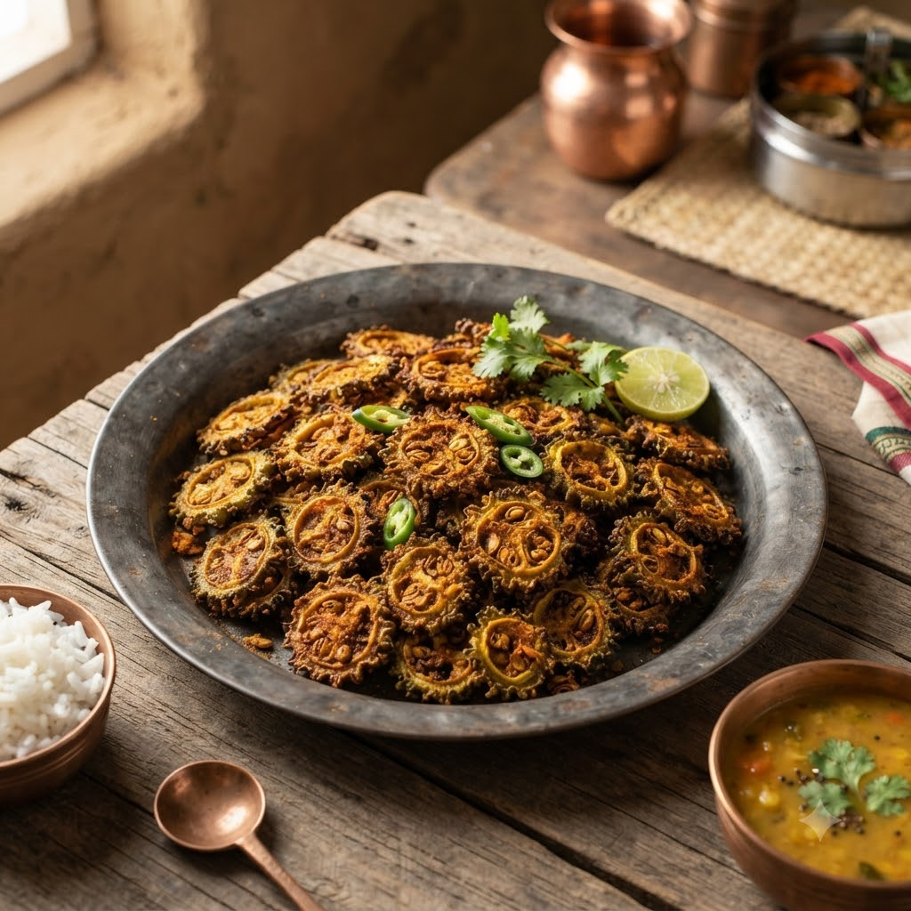

Airfryer or Chef Magic — pick whichever you have free — 22 min — Serves 4
Prep ahead: Salt sliced karela and rest 18 minutes, then squeeze out the bitter liquid before cooking.
Ingredients
Method
Tip: Salting and squeezing out the liquid is what cuts the bitterness — don’t skip this step.